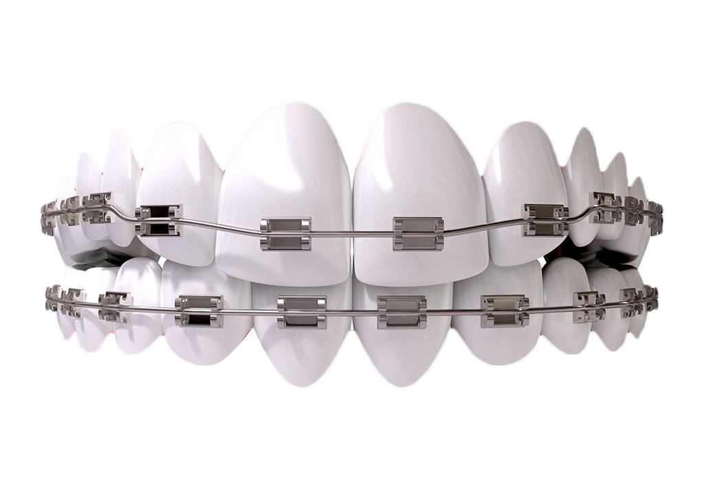

Blanquel Ortodoncia, es un grupo especializado que se preocupa por la salud bucal de las familias de México. Los tratamientos de ortodoncia son realizados para desplazar los dientes hasta corregir su posición para lograr una mordida adecuada.